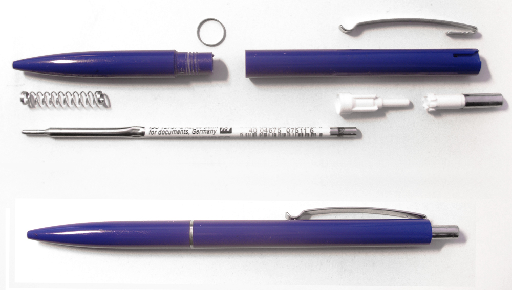

ballpoint pen

A ballpoint pen, also known as a biro (British English), ball pen (Hong Kong, Indian and Philippine English), or dot pen (Nepali) is a pen that dispenses ink (usually in paste form) over a metal ball at its point, i.e. over a "ball point". The metal commonly used is steel, brass, or tungsten carbide. The design was conceived and developed as a cleaner and more reliable alternative to dip pens and fountain pens, and it is now the world's most-used writing instrument; millions are manufactured and sold daily. It has influenced art and graphic design and spawned an artwork genre. Some pen manufacturers produce designer ballpoint pens for the high-end and collectors' markets. If you want to know more click the this wiki website.